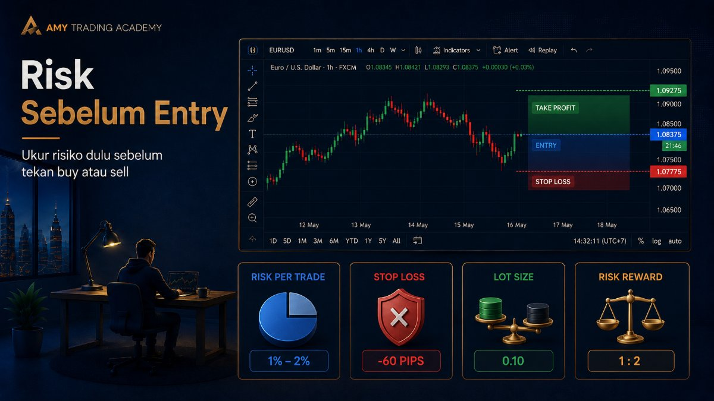
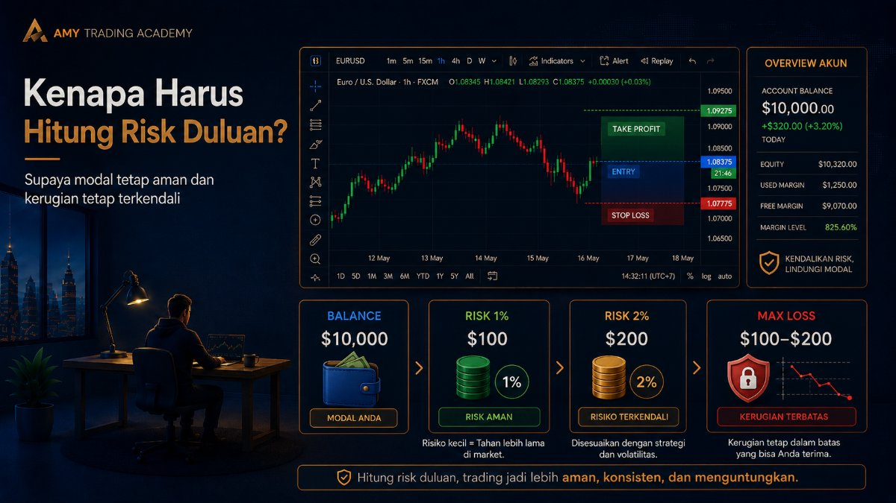
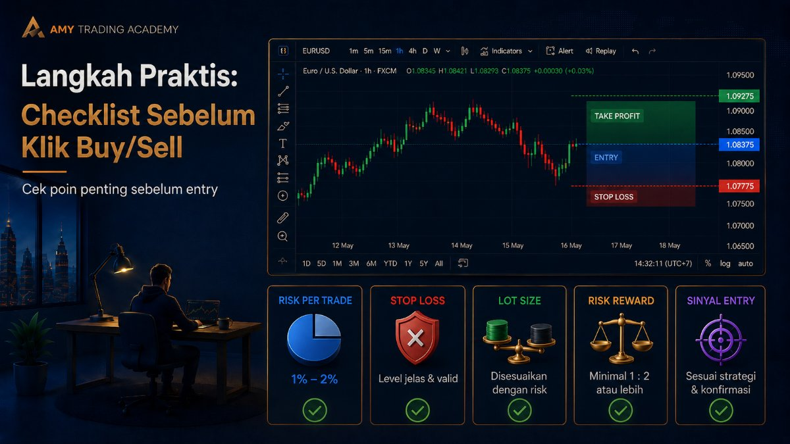
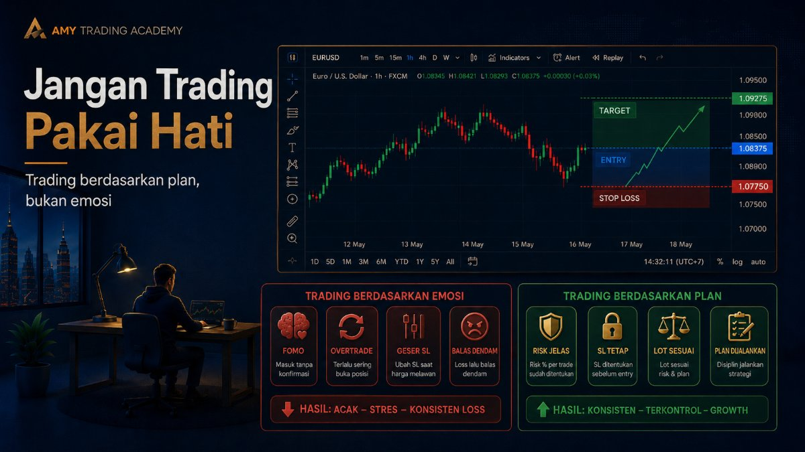
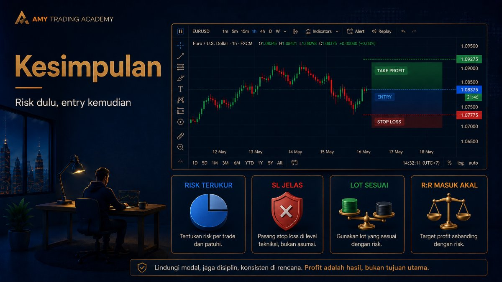

Risk Sebelum Entry

Ada satu kebiasaan buruk yang menular di kalangan trader pemula: mereka melihat chart, merasa harga "pasti" naik, lalu buru-buru menekan tombol Buy karena takut ketinggalan kereta (FOMO). Setelah tombol diklik, baru mereka bingung, "Aduh, Stop Loss-nya ditaruh di mana ya? Kalau turun sampai sini, aku rugi berapa dolar nih?"
Kalau kamu masih melakukan hal seperti itu, selamat, kamu bukan sedang trading. Kamu sedang melempar dadu di kasino. Di Amy FX Academy, kita punya satu prinsip emas yang tidak boleh dilanggar: Hitung Risiko SEBELUM kamu Entry!
Kenapa Harus Hitung Risk Duluan?

Trading itu adalah permainan probabilitas. Tidak ada strategi teknikal di dunia ini—entah itu SMC, ICT, SnD, atau indikator termahal sekalipun—yang bisa memberikan Win Rate (tingkat kemenangan) 100%. Kamu PASTI akan mengalami Loss (kerugian). Pertanyaannya bukan "Apakah aku akan Loss?", tapi "Berapa banyak uang yang rela aku korbankan kalau analisa ini salah?"
Menghitung risiko sebelum entry memberikanmu tiga kekuatan super:
- Menghilangkan Panik: Kalau kamu tahu dari awal bahwa maksimal kerugianmu di posisi ini hanyalah $10, kamu tidak akan deg-degan atau berkeringat dingin melihat chart bergerak liar.
- Menjaga Umur Akun: Kalau setiap kali rugi kamu hanya kehilangan 1% dari modal, kamu butuh 100 kali Loss berturut-turut untuk bangkrut (MC). Peluang untuk salah 100 kali berturut-turut itu sama kecilnya dengan peluang benar 100 kali berturut-turut.
- Berpikir Objektif: Kalau batas ruginya sudah diatur, kamu membiarkan market yang membuktikan analisamu benar atau salah, tanpa campur tangan emosi.
Langkah Praktis: Checklist Sebelum Klik Buy/Sell

Jangan pernah menekan tombol Order di MetaTrader sebelum kamu bisa menjawab tiga pertanyaan ini dengan pasti:
1. Di mana Invalidation Point (Titik Batal Analisa)?
Sebelum tahu SL-nya di mana, kamu harus tahu di harga berapa analisamu dianggap GAGAL. Misalnya kamu Buy karena ada area Support di harga $2000. Maka titik batalnya adalah kalau harga tembus ke bawah $1995. Nah, titik $1995 inilah yang menjadi letak Stop Loss (SL) kamu.
2. Berapa jarak dalam satuan Pips?
Hitung jarak dari harga kamu Entry sampai ke harga Stop Loss tadi.
Contoh: Entry di $2000, SL di $1995. Jaraknya adalah $5. Di market Gold, $5 itu sama dengan 50 Pips.
3. Berapa Lot yang sesuai dengan Risiko Dolarku?
Sekarang, tentukan berapa Dolar maksimal yang rela kamu hilangkan untuk posisi ini. Misalkan modalmu $1000, dan kamu siap rugi maksimal 1% ($10).
Kita hitung mundur:
Batas Rugi = $10
Jarak SL = 50 Pips
Berapa Lot-nya?
Lot = Batas Rugi / (Jarak SL x $10)
Lot = $10 / (50 x $10) = $10 / 500 = 0.02 Lot.
Boom! Sekarang kamu tahu dengan pasti bahwa kamu harus membuka posisi sebesar 0.02 Lot. Kalau harga benar-benar menyentuh SL, uang yang hilang tepat $10. Tidak lebih, tidak kurang. Pikiranmu akan jauh lebih tenang.
Jangan Trading Pakai Hati

Kalau setelah dihitung ternyata jarak SL-nya terlalu jauh, dan untuk mencapai risiko $10 kamu harus pakai ukuran Lot di bawah 0.01 (yang mana tidak bisa dilakukan), apa yang harus dilakukan?
Tinggalkan setup itu. Jangan dipaksakan masuk!
Market tidak pernah tutup peluang. Akan selalu ada setup baru besok, lusa, atau minggu depan. Pemula biasanya memaksa masuk, memperbesar risiko melebihi batas yang disepakati, lalu berakhir dengan penyesalan mendalam.
Kesimpulan

Trader yang sukses bukanlah trader yang analisanya selalu benar. Trader yang sukses adalah trader yang sangat ahli dalam mengukur, mengontrol, dan membatasi kerugiannya. Jadikan "Menghitung Risk" sebagai kebiasaan reflek, sama seperti kamu reflek memakai sabuk pengaman saat masuk ke dalam mobil.